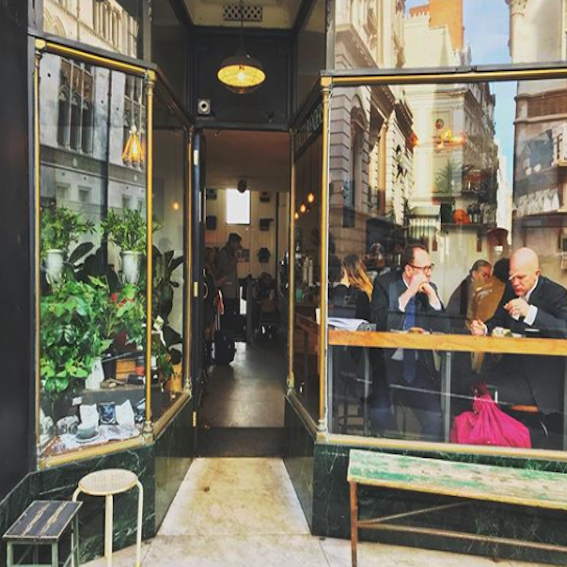
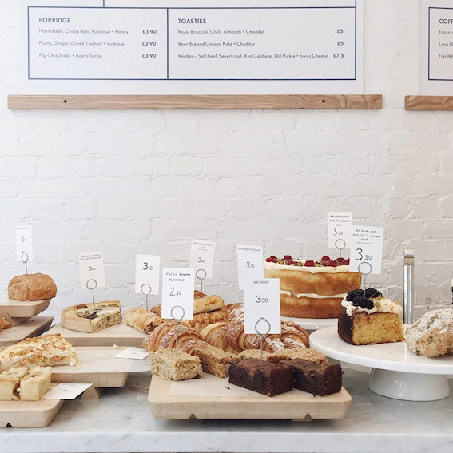
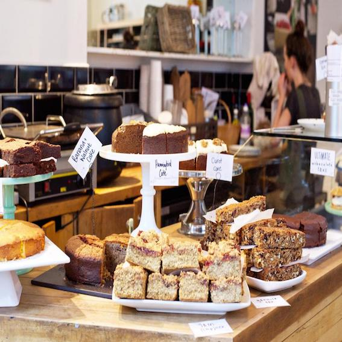
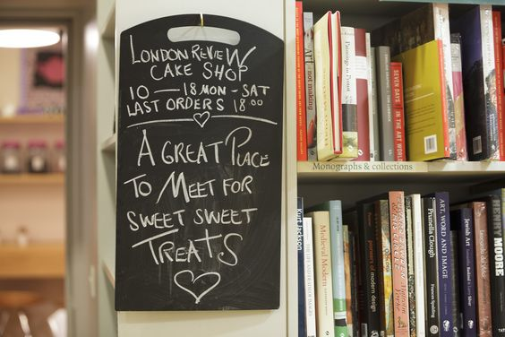
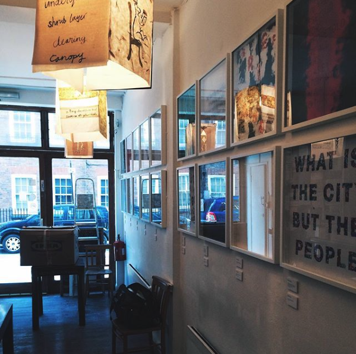
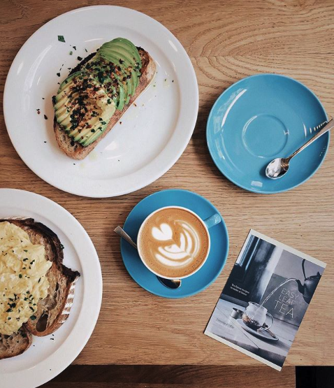
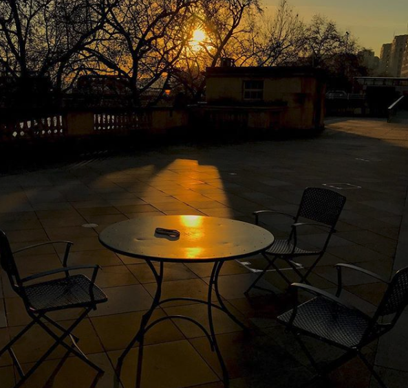
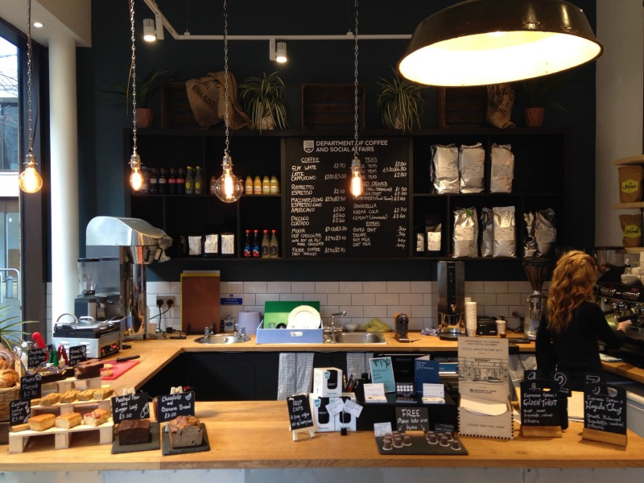
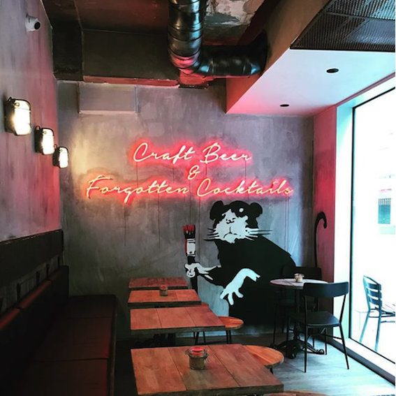

Coffee Around LSE
Bored of LSE Cafes? Venture Around!
- Press Coffee Fleet Street

- 6 min walk from LSE Library
- Great for: study space
- Lundenwic

- 5 min walk from Clement House
- Great for: brownies and avocado toast
- Fleet River Bakery

- 4 min walk from NAB
- Great for: hearty salads, soups, fritatas
- London Review Cake Shop

- 10 min walk from NAB
- Great for: book lovers
- The Poetry Cafe

- 10 min walk from Old Building
- Great for: study space, poetry open mics
- Prufrock

- 10 min walk from 32 Lincoln's Inn
- Great for: Rwandan coffee, mushroom paninis
- Somerset House Cafe

- 6 min walk from the Towers
- Great for: ambience, teas, river views
- Department of Coffee and Social Affairs

- 10 min walk from 32 Lincoln's Inn
- Great for: study meetings, hot chocolate
- Black Sheep Coffee

- 10 min walk from LSE Library
- Great for: quiet study spots, funky decor